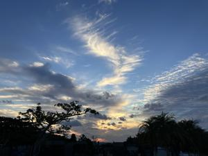
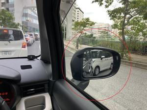

うるがいの話 ある日
最新: ひこうき雲【うるがいの話 ある日】とは 一日だけのプログです
『うるがいの話』の最新一日だけのプログで、通信料が少なく経済的だ。カニの画像をクリックすると全ての日付が載る『うるがいの話』サイトを表示します
|
|
【うるがいの話】 うるがい(ｳﾙｶﾞｲ urugai)とは、『もずくがに』の名前でとても大きくなります。 |
|---|---|
|
|
【カミマヤーの話】 猫のことを方言でマヤーといいます。カミマヤー（kamimayaa）とは、神の猫のことです。 |
|
【たながぁの音楽】 たながぁ（ﾀﾅｶﾞｰ tanagaa）とは手長えびのことで、何種類かあり大きいのは車 エビぐらいになります。 |

|
【ぶながぁの話】 ぶながぁ(ﾌﾞﾅｶﾞｰ bunagaa)とは、赤い髪の毛、赤い身体、そして身長は１ｍ２０ｃｍ ぐらい、川の蟹を食べているの目撃された。場所は沖縄県国頭郡大宜味村のと ある村僕の隣近所に住んでいる爺さんから、聞いた話です。 |
|
|
【ギーマの話】 ギーマ(giima)とは、山原の里山に咲くスズランに似た、 花を付けます。実は食べられます、 気が付くと口の周りが紫になっています。 |
2025年11月21日 (金）ひこうき雲
16:01

３年前にユーチューブ動画を作成した『ひこうき雲』の工工四に
しかかったところ、楽譜が間違っていることに気が付く。無視で
できないレベルなので、楽譜データを再作成した。ウーン、３年
前なので仕方がないかな。これは、きのうジョギングの時にみた
ひこうき雲

これが、新しい動画
ひこうき雲 三線(sanshin) 工工四(pdf)
https://youtu.be/5CipVLr9HcA
下は、２０２２年１月７日の作品、音楽ソフトも古い世代のもの
これはこれでいいのだが。きょう、公開から非公開に変更した
ひこうき雲（三線演奏）
https://youtu.be/wgq28t5aP2M
パレット久茂地に行く、開店近くなので駐車場に列に並ぶ、全然
前に進まない。モノレールの下は、自転車が一杯留めてあった。

余りにも進まないので、諦めて列から外れる車も。さらに列に割
り込もうとする迷惑な車、ミラーに写っている車ジャイ！。

そのうち、トイレに行きたくなって列を外れ、那覇市役所の駐車
場へ行く。最初から、そこにすれば良かった。あっと、この後エ
ディオンへ行ってボタン電池を取りました。